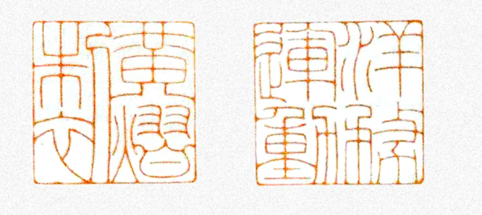
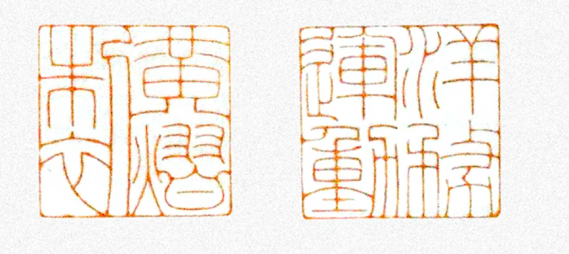

ABOUT
Film
Digital Medium Ontology Series — Chapter
Telecommunication & Analogue
Producer: Yi Huang
Content: In 1876, the first cohort of students from the Westernization Movement traveled to Britain to study wired telegraphy; in 2025, self-funded students from the Republic journeyed there to study contemporary art practice. Time suffers a dislocation at Loch Ken in South Scotland; the eras weave together into invisible fields roaming the air. The spark plug, forgotten at Parton Kirk, continues to flicker—yet this time, it is not a proof of existence, but a phantom interlude of long and short waves. The unpublicized reality shatters the imagination of a personal pilgrimage; that frequency, hidden at the opening of a poem, receives carrier waves transmitted to the Great Northern Telegraph Company in Denmark, and the only one capable of demodulating it comes from J.J. Thomson Avenue...
Before Maidenhead Bridge, are the scattered dots of pointillism a tribute to Seurat’s exploration, or do they hold another intent? Piled masses of red, green, and blue besiege the gaze; the train on the railway bridge has grown hazy, and the viaduct looming faintly in the distance seems to stand amidst the real and the illusory. Suddenly, the train glides slowly past the modern platform; accompanied by the roar of the steam engine and the flashing red warning on the locomotive, the torrent of thick smoke drifting skyward implies not only mechanical energy but also the imagination of wisdom and reason. If Turner were alive today, he surely could never have imagined that his casual, intuitive attempt that night—“Rain, Steam and Speed”—would inspire humanity’s greatest exploration of light.
Under the Bernton Viaduct, two bedraggled figures are at work: one adjusting a large-format camera, the other projecting three beams of light simultaneously onto the bridge structure. In the town of Ayr, soon to be shrouded by the cries of the night, a taut string awaits a specific force. Three negatives of the same color overlap on the plane to reflect a new luminosity; the blending primary colors restore reality. Above the rain and below the rain—reality, history, and existence—all have found their carrier.
Heading south along the A713 through a stretch of hills, the edge of Loch Ken finally comes into view; it is still a six-mile drive to Parton Kirk...
The rusted iron gate helplessly throws the cemetery open; the lingering aftereffect of Andy Goldsworthy’s performance brings the air to a standstill. The ancient telegraph machine awaits the inertia of voltage under the flickering of the spark plug; the radio loudspeaker seems to have something to say but has been muffled. They do not know what they have received; it seems to be a void. Nothingness. Illusory schools of fish gradually fill the retina; the Siren drags her enchanting body to lie before the deck. In this dazzling virtual space, the song flows slowly through the Strait of Messina; as it enters, it gradually suppresses the noisy Sicilian accent. The silhouette of the Harpy reappears at times—did her form cause countless heroes to bow in defeat?
Drifting south by boat along Loch Ken, accusations and mockery crushed my psychological defenses. The accordion pulled the tragic mood to its zenith, and the plummeting vibrations traveled along bird feathers straight to Threave Castle. What offers release? Only the wine.
When the grim outcome was already cast in stone, the old acquaintance from J.J. Thomson Avenue made everything worse. After the arduous struggle of demodulation, those wave fields—mutually generating and extinguishing like sine and cosine—made matters increasingly bewildering. Are we still heading in the direction of the truth?
On the second floor of Tate Britain, that unfinished canvas stands in silence, pointing all of this toward that shipping route in Southern Italy, between Naples and Sicily.
"Are you certain that what you seek is indeed what you are searching for? Siren?"
Is the fiction formed by intuition merely the unpublicized reality? I ask?
Format: ......
Tech: ......
独立影像
数字媒介本体系列分章
媒介历史分章
制作人：黄熠
内容：一八七六，首批洋务学子赴英学习有线电报技术，二零二五，共和国自费留学生赴英学习当代艺术实践。时间在南苏格兰的肯湖错位，它们交织成无形的场域自空气中遨游，被遗忘在帕顿教堂的火花塞仍在不停闪烁，但此次它不是表现存在的证明，而是似有似无的长短波间奏。未公开的现实把个人朝圣的想象击碎，那段藏在诗句开头的频段接收着发射至丹麦大北无线电装置里的载波，能够解调它的人只来自于JJ托马斯大道……
梅登黑德桥前，散落的点彩画是在致敬修拉的探索还是另有用意？堆砌的红绿蓝将视线包围，铁路桥上的火车已朦胧不清，远方隐隐约约显露的高架桥似乎拥立在真实与虚幻之间。倏尔，火车缓缓驶过现代化的月台，伴随蒸汽机的轰鸣与车首警告红标的闪烁，那如洪流般的浓烟飘向空中不仅暗示了它带来的机械能，还有智慧与理性的想象，如若透纳在世，他定无法想象那晚随意的直觉尝试“雨，蒸汽与速度”，竟启发了人类对于光最大的探索。
伯恩顿高架桥下，狼狈的二人，一人正在调试大画幅相机，一人将三束来自投影仪的光线一齐照向桥体，在即将被夜鸣笼罩的艾尔小镇，那根绷直的弦在等待那个力。三张同色底片在平面的交叠下重新映照出新的明度，混合着的三原色将现实还原，雨上雨下，现实，历史，存在，皆有了载体。
沿A713穿过一片丘陵南下终于看见肯湖的边缘，去往帕顿教堂仍需驾车六英里……
生锈的铁门无助的将墓地敞开，安迪高兹沃斯的行为后劲将空气停顿，古老的电报机在火花塞子的闪烁下等待着电压的惰性，无线电台的扩音器仿佛有话想说却被捂住了嘴。他们不知道接收到了什么，好似是一片虚无，虚无，虚幻的鱼群逐渐填满视网膜，海妖塞壬拽着抚媚的身躯趴在甲板前，眼花缭乱的虚拟空间中，歌声缓缓流经墨西拿海峡，当它渐入时慢慢压制住了嘈杂的西西里口音，鸟体女妖的剪影时而复现，是否其引无数英雄尽折腰？
沿肯湖乘船南下，指责与嘲弄击溃了我的心理防线，手风琴将悲怆的情绪拉至顶点，倾泻而下的震动随鸟羽直抵特利维城堡。何以解脱？唯有杜康。
当糟糕已成定局时，JJ托马斯大道上的故人让一切变得更加糟糕。经过千辛万苦的解调，那如正余弦般彼此相生相灭的波场让事情变得愈加扑朔迷离，我们是否还朝着真相的方向？
泰特不列颠的二楼，静静矗立着的，那副未完成的画作，将这一切指向了意大利南部那条那不勒斯与西西里岛的航线。
“你确定你要找的，就是你要找的吗？塞壬？”
直觉所形成的虚构是否就是未公开的现实？我问？

形式：......
技术：......


 

自检：........
Self Reflection: .......
© 2026 All Rights Reserved.
Early Research Documentary--《Not Bad》